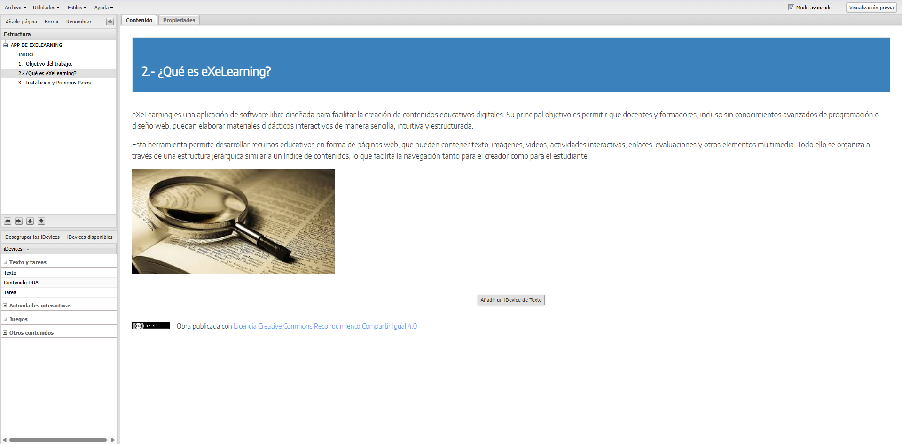

Instalación y primeros pasos
Instalación
eXeLearning es una herramienta multiplataforma, lo que significa que puede instalarse en diferentes sistemas operativos como Windows, macOS y Linux. Al ser de código abierto y gratuito, su descarga es completamente libre desde la página oficial: https://exelearning.net
Primeros pasos
Una vez instalado y ejecutado por primera vez, el programa muestra su pagina principal de contenidos, compuesta por los siguientes elementos:
- Árbol de contenidos (que se encuentra en el lado izquierdo): es la zona donde se estructura el proyecto por temas, subtemas y páginas.
Área de trabajo (que se encuentra en el lado derecho): donde se insertan los contenidos mediante los iDevices( se detallará más tarde).
Barra de herramientas: es una especie de menú donde se incluyen opciones para guardar, abrir, exportar y personalizar el proyecto.
Panel de iDevices: contiene las herramientas didácticas interactivas que se pueden insertar en cada página (texto libre, actividades, preguntas, imágenes, etc.)
